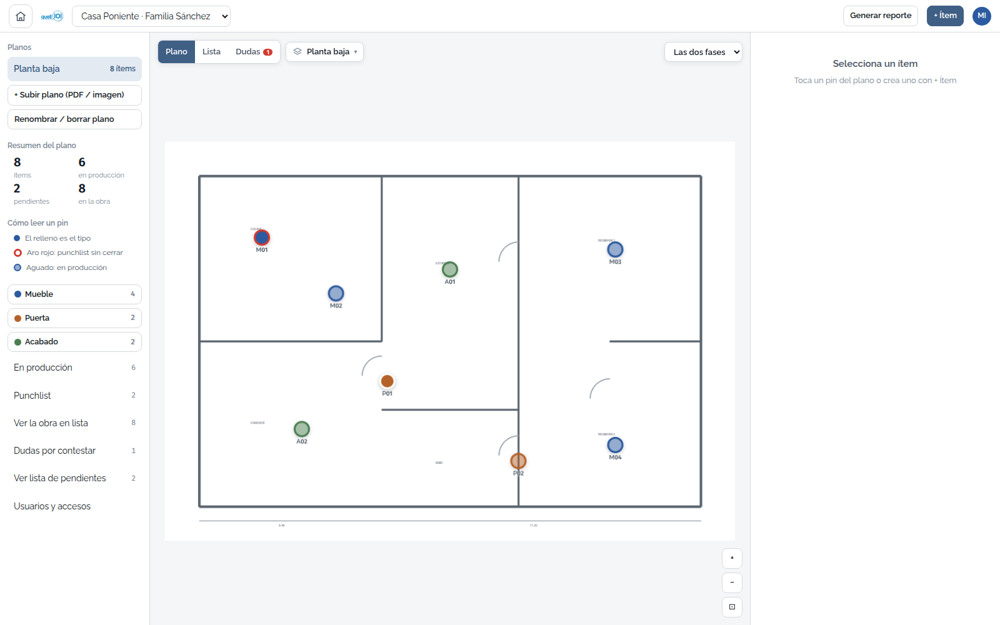
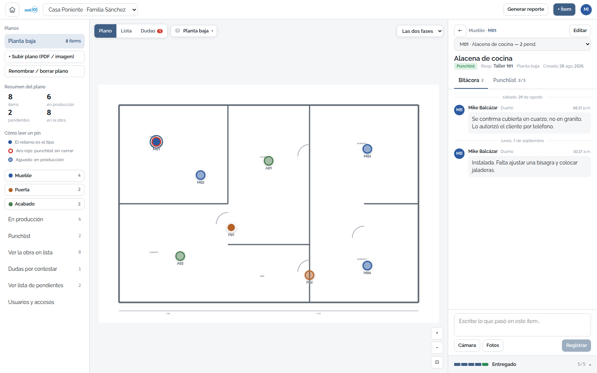
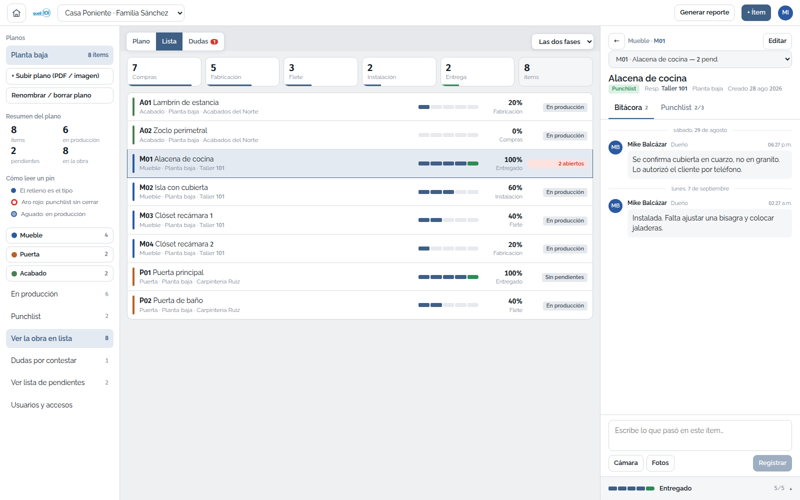
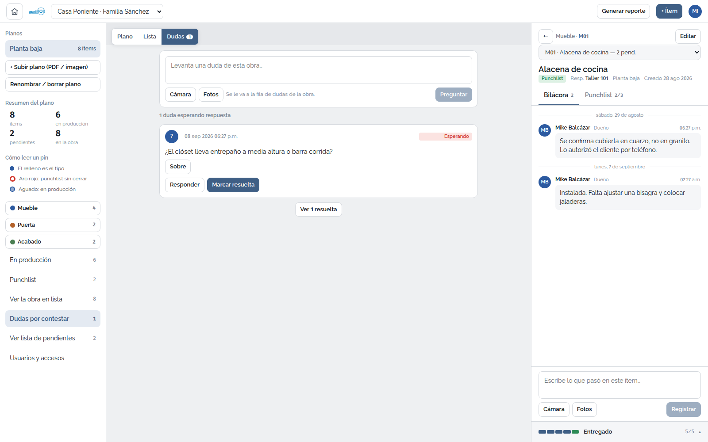

Se sube el plano —PDF o foto— y se le ponen pines: uno por cada mueble, puerta o acabado. Cada pin lleva su propio camino: compras, fabricación, flete, instalación, entrega. Un toque por etapa y el plano entero se lee de una mirada. Al entregar se abre la lista de pendientes, con quién responde y para cuándo. En obra sin señal no se cae: lo que escribes se va guardando y se sube solo cuando regresa la red.
Pedir una demostración


